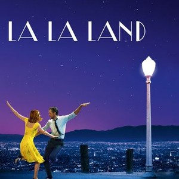

Film Review: ‘La La Land’
After an astounding Whiplash (2014), director Damien Chazelle is back with yet another awe-inspiring tale of music and passion in the form of La La Land which stars Ryan Gosling and Emma Stone in lead roles. As magical as the title suggests, the film takes viewers on a phenomenal ride of love and ambition but without turning a blind eye to the harsh realities of life. Why I say this is because the choices the characters make in this film have realistic and often heart-breaking consequences. The plot of the movie may feel old school at times but the beauty of this movie lies in its wonderful execution and powerful performances by the lead cast. The movie has a variety of brilliantly executed shots including an over 5 minute one shot opening sequence as well as the beautiful ending sequence all thanks to the cinematographer of the film, Linus Sandgren. Apart from the camera angles and the movements, multiple shots have beautiful backgrounds as well as appropriate lighting which do justice to the main theme of the movie as well as that particular sequence. Talking more about technicalities of the film, the use of different kinds of lights especially spotlights is done to highlight the passion and commitment of the main characters towards their respective talents. The editing and colour grading of the movie is master class and honestly no less was expected from the immensely talented Academy Award winner Tom Cross, who reunited with Damien Chazelle after Whiplash
Apart from the direction and technicalities, what makes this film one of the best musicals of our generation are the charming and exceptional performances by Ryan Gosling and Emma Stone. One could simply feel the chemistry between these two gifted actors on screen and relate to it pretty well. Both of them play their parts with utmost brilliance and sincerity. Also, J.K. Simmons’ inclusion was like a starter pack for those who haven’t seen Whiplash. The music and the songs of the film were bound to be great as it was yet again in the capable hands of Justin Hurwitz but the fact that Emma Stone and Ryan Gosling sang their own songs made the movie even more relatable and enhanced the experience. The main aspect of life which the film wants to highlight is that life is not a fairy tale and the consequences of every decision a person makes often have a great deal of impact on their lives in a realistic environment. The movie is a spectacle both in terms of visual appeal as well as the sound appeal and is bound to make you cheer up, sing, laugh and cry, all within its just over 2 hours of run time.
La La Land Trailer